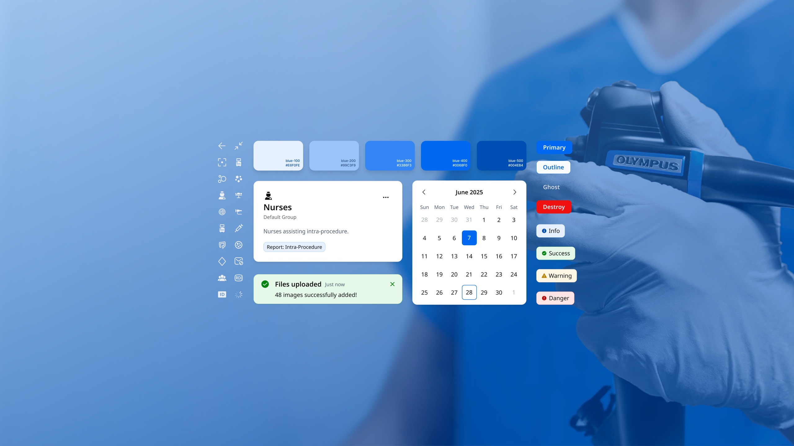

I design systems, interfaces, and experiences for health tech products that help everyday people live happier, healthier lives.
EXPERIENCE
Olympus
Under Armour
MapMyFitness
MyFitnessPal
St Jude Medical
Asuragen
FOCUS
Design Systems
Fitness Tracking
Wearable UX
Premium Upsells
Marketing Design
Branding
Selected works

OlySense
Unifying the endoscopic workflow for industry leader Olympus

UA Baselayer
A brand-right system-driven redesign of Under Armour's fitness apps

UA x Samsung
Find Your Form with a co-branded smartwatch by Under Armour and Samsung

MyFitnessPal Insights
Premium insights to help you hit your nutrition goals

I'm here to help
In 2012 I was working as a contract designer for a medical tech company that made pacemakers and pain-management devices when I realized that I’d found my calling with my career - using my skills to help everyday people live happier, healthier lives. Since then I’ve pursued roles that live up to this guiding principle - from consumer fitness tracking apps, nutrition management features, and goal setting flows to cancer screening and treatment software, my work has helped millions improve their daily habits and conditions, while staying true to brand vision and mission.
I’ve worked with global brands Under Armour, Samsung, Garmin and Olympus, on cross-functional international teams building products that intersect hardware and software. From connected footwear to wearables to clinical software, I thrive at converging complex data into user friendly experiences.
Inherently a systems-thinker, I care about the space between a well-designed component and a well-designed system - the tokens, documentation and governance that help a product actually hold shape and stay true to it’s principles as it scales.
As a designer always on the forefront of what’s next, AI has become an indispensable partner in my work. I retain complete control over what it executes, using my systems-thinking approach to define guardrails and goals prior to hitting the prompt. This portfolio site is a clean example - I make all the design decisions and lean on Claude to set up the scaffolding and help with implementing wide-impact structural changes. The tokens are custom, the components all mine, and the UX defined in Figma first before wasting compute iterating on concepts until something sticks. I also take full responsibility for the flaws - typos, glitches, something off-kilter or long-winded. I am only human - but, so are you. And that’s who I build for - everyday people, just trying to live happier, healthier lives.